Công cụ hiệu chuẩn liên kết laser dùng để liên kết tọa độ hình ảnh với tọa độ gương quét trong khu vực tìm kiếm được chỉ định. Kết quả liên kết minh họa trong Hình 1.
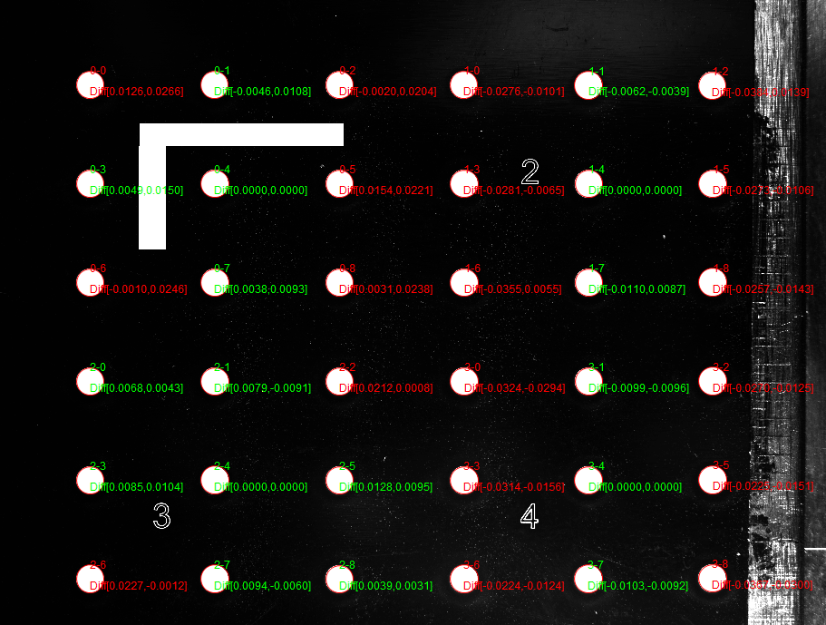
Trong các ứng dụng phổ biến như cắt laser, khắc laser, hàn laser, công cụ này có thể dùng để hiệu chuẩn liên kết giữa hệ tọa độ hình ảnh và hệ tọa độ laser.
Khi hiệu chuẩn liên kết giữa hệ tọa độ hình ảnh và hệ tọa độ laser, trước tiên cần xác định từng điểm ảnh tương ứng với điểm laser. Công cụ hỗ trợ hình ảnh xoay và phản chiếu bất kỳ để thực hiện hiệu chuẩn tự động, vì vậy cần có một đặc trưng tiêu chuẩn trên hình ảnh để thuật toán xử lý hình ảnh tự động nhận dạng và tính toán tham số xoay và phản chiếu. Hình 2 minh họa đặc trưng dạng L chuẩn, với chiều dài theo hướng X của laser = 600 Pixel, chiều dài theo hướng Y = 300 Pixel, bề rộng = 60 Pixel. Thuật toán sẽ tự động nhận dạng biên của cạnh L, tính toán góc giữa hai cạnh, hướng xoay, từ đó xác định tham số xoay và phản chiếu của hình ảnh.
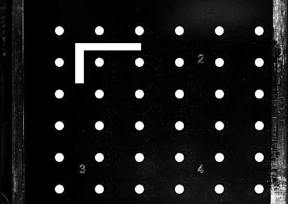
Trong quá trình hiệu chuẩn, hệ tọa độ hình ảnh và hệ tọa độ laser được biểu diễn dưới dạng hệ tọa độ trực giao đồng phẳng, minh họa trong Hình 3.
Quan hệ chuyển đổi giữa hai hệ tọa độ có thể được biểu diễn bằng công thức sau. Khi nhập một bộ tọa độ hình ảnh và tọa độ laser tương ứng, có thể tính toán mối quan hệ chuyển đổi giữa hai hệ tọa độ dựa trên công thức này.
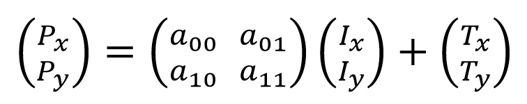
Quy trình thực hiện công cụ: cấu hình đầu vào -> cài đặt giao diện thuộc tính nâng cao -> thực hiện hiệu chuẩn.
Nhấp đúp vào công cụ, trong cửa sổ bật lên cấu hình hình ảnh đầu vào, như minh họa trong Hình 4.
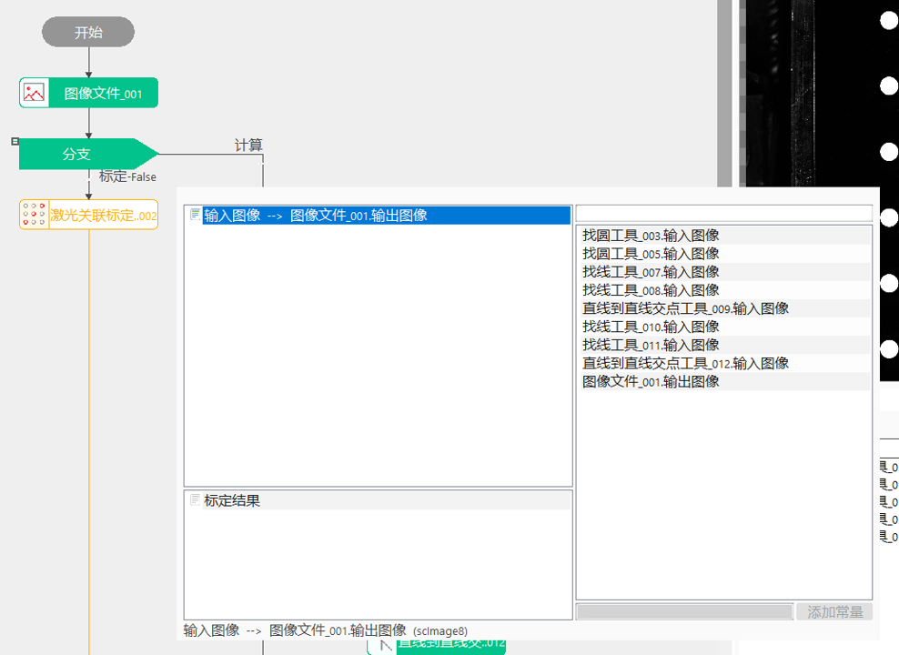
Nhấp chuột phải vào công cụ, chọn “Thuộc tính” để vào giao diện nâng cao, như minh họa trong Hình 5.
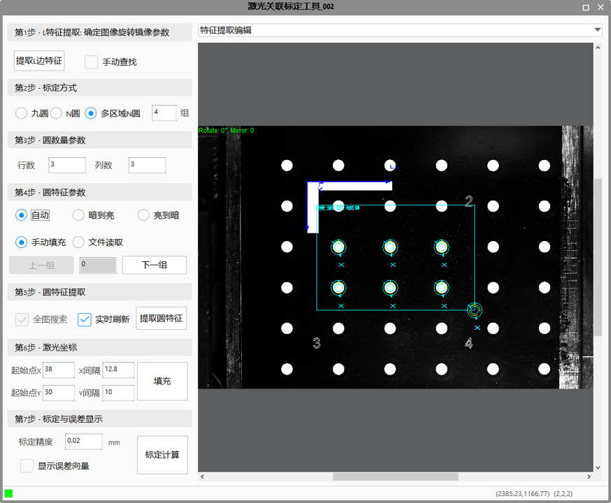
Nhấp “Trích xuất đặc trưng cạnh L” để tự động trích xuất cạnh L trong hình ảnh. Khi trích xuất thành công, tọa độ sẽ được đặt tại vị trí tương ứng, như Hình 5. Nếu trích xuất tự động thất bại, người dùng có thể chọn chức năng “Tìm thủ công” để trích xuất cạnh L trong giao diện thuộc tính. Lưu ý: khi trích xuất tự động, thuật toán sẽ quét tất cả các đoạn thẳng trong hình và lọc theo điều kiện nhất định, trong đó tỷ lệ cạnh dài và cạnh ngắn của đặc trưng L là 2:1. Trong thực tế, khi khắc laser có thể xảy ra giãn nở hoặc co rút, tỷ lệ cạnh ngoài của đặc trưng L có thể không chính xác, lúc này kết hợp cạnh trong hoặc cạnh trong-ngoài sẽ gần với tỷ lệ 2:1 hơn, nên vị trí đặc trưng L không luôn nằm ở cạnh ngoài, như minh họa Hình 6. Tuy nhiên, tham số xoay và phản chiếu hình ảnh tính từ cạnh trong hoặc ngoài đều giống nhau, không ảnh hưởng đến kết quả cuối cùng.
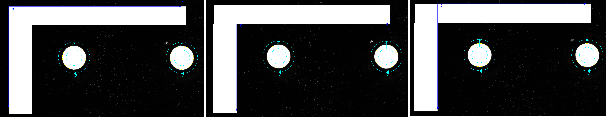
Sau khi trích xuất thành công cạnh L, công cụ sẽ dựa trên mối quan hệ giữa trục X và Y của cạnh L để tính tham số xoay và phản chiếu hình ảnh, như minh họa Hình 7. Trong đó, Rotate biểu thị góc xoay hình ảnh, Mirror biểu thị tham số phản chiếu. Mirror chỉ nhận giá trị 0 hoặc 1: 0 nghĩa là hình ảnh không phản chiếu, 1 nghĩa là hình ảnh phản chiếu theo chiều ngang (lưu ý: phản chiếu theo chiều dọc có thể đạt được bằng phản chiếu ngang + xoay, nên thuật toán chỉ xét phản chiếu ngang). Góc Rotate có thể không hoàn toàn chính xác nếu định vị cạnh L có sai số; ví dụ lý thuyết là 0°, tính toán có thể cho 1°, 2° hoặc -1°. Tham số xoay và phản chiếu chỉ dùng nội bộ để sắp xếp tự động các Mark hình tròn, sai số nhỏ không ảnh hưởng đến kết quả. Người dùng không cần quan tâm quá nhiều. Để kiểm tra tính chính xác của Rotate và Mirror, có thể dùng “Công cụ xoay và phản chiếu” với góc Rotate làm tròn và Mirror = 0 hoặc 1, sau đó kiểm tra hướng cạnh L trên hình xuất ra.
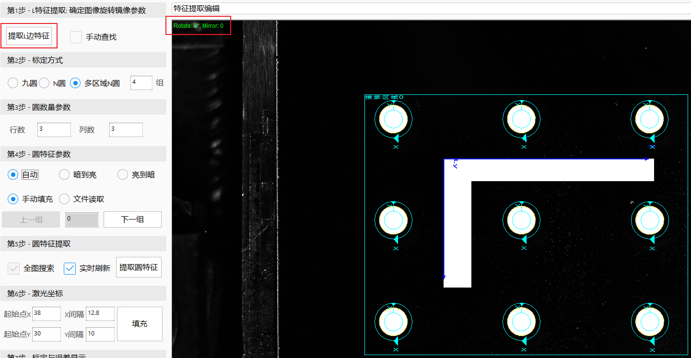
Phương thức hiệu chuẩn có 3 loại: chín vòng, N vòng, đa vùng, trong đó chín vòng là trường hợp đặc biệt của N vòng, N vòng là trường hợp đặc biệt của đa vùng. Việc phân loại này chủ yếu do trong thực tế, hiệu chuẩn liên kết chín vòng chiếm phần lớn ứng dụng, nên được tách riêng để người dùng thực hiện hiệu chuẩn với ít thao tác nhất.
Tham số số lượng vòng cho phép người dùng tự định nghĩa số hàng và số cột của các đặc trưng vòng trong mỗi vùng khi sử dụng N vòng hoặc đa vùng. Cả hàng và cột có giá trị trong khoảng [0, 30].
Khi trích xuất kết quả vòng, hướng tìm kiếm mặc định là từ trong ra ngoài và không cho phép người dùng chỉnh sửa. Người dùng có thể thay đổi cực tính tìm kiếm để phù hợp với thực tế. Mặc định là “bất kỳ”, trong hầu hết các trường hợp không cần chỉnh sửa.
Khi chọn hiệu chuẩn đa vùng, nút này sẽ được kích hoạt, cho phép người dùng chuyển vùng tìm kiếm hiện tại bằng cách nhấn “Nhóm trước” hoặc “Nhóm tiếp theo”.
Toàn bộ hình ảnh: áp dụng cho hiệu chuẩn chín vòng hoặc N vòng; khi chọn, sẽ tìm kiếm các Mark hình tròn trên toàn bộ hình ảnh.
Cập nhật thời gian thực: đáp ứng các thao tác GUI của người dùng. Khi kéo vùng tìm kiếm hoặc GUI công cụ tìm vòng, nếu tùy chọn này được chọn, kết quả vòng sẽ được trích xuất tự động; nếu không chọn, người dùng cần nhấn nút “Trích xuất đặc trưng vòng” để trích xuất.
Trích xuất đặc trưng vòng: khi người dùng nhấn nút này, công cụ sẽ tìm các vòng trong vùng hiện tại tương ứng với GUI công cụ tìm vòng và hiển thị kết quả trên giao diện.
Tọa độ laser có hai cách chính: nhập thủ công hoặc đọc từ file, như Hình 8. Khi điền điểm bắt đầu và khoảng cách tọa độ laser, điểm bắt đầu là giá trị tọa độ X và Y nhỏ nhất trong vùng tìm kiếm hiện tại, khoảng cách luôn là giá trị dương.
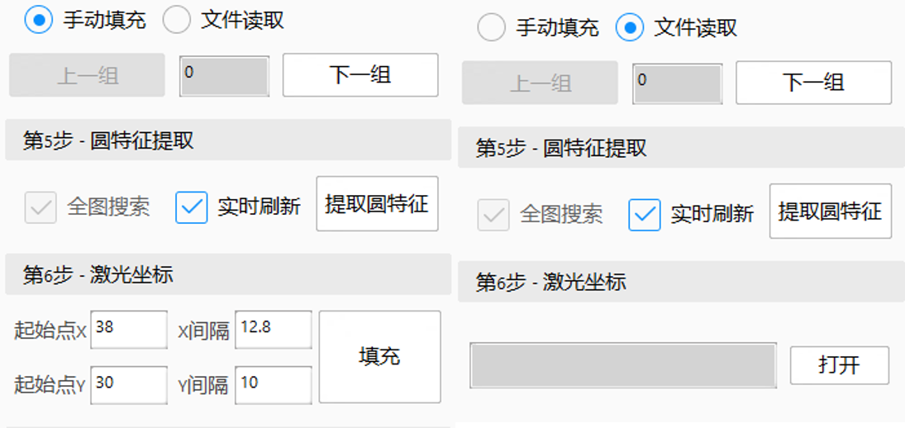
Khi hoàn tất các thiết lập tham số, người dùng có thể nhấn nút “Tính hiệu chuẩn” để tính kết quả. Sau khi tính xong, tại mỗi tâm vòng sẽ hiển thị sai số hiệu chuẩn của vòng đó. Nếu sai số theo hướng X/Y vượt quá giá trị “Độ chính xác hiệu chuẩn”, sẽ hiển thị màu đỏ, ngược lại hiển thị màu xanh lá, như Hình 9.
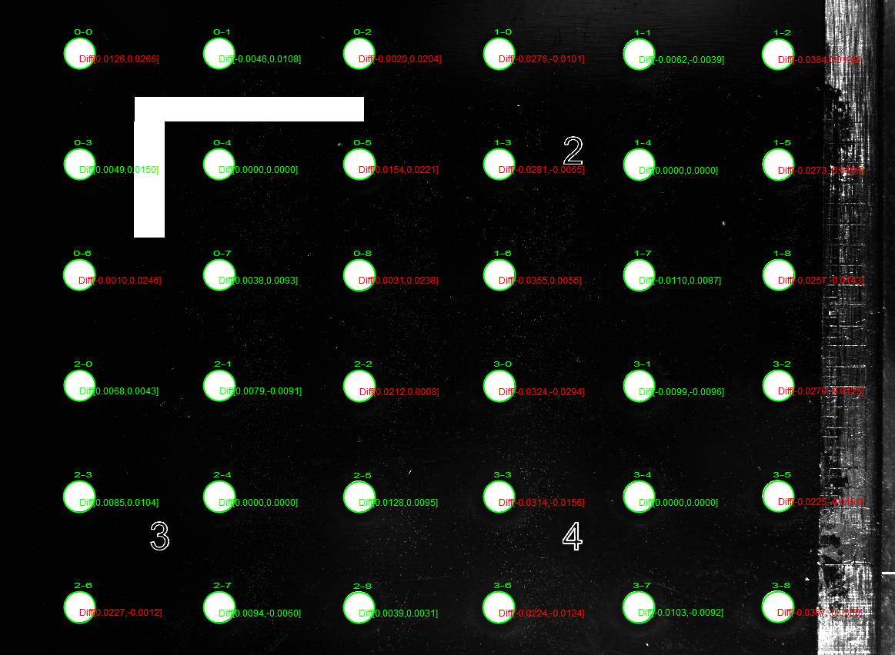
Hình 9 hiển thị giá trị sai số chính xác. Nếu muốn quan sát trực quan và cảm nhận xu hướng sai số, người dùng có thể chọn “Hiển thị vector sai số”, lúc này mỗi sai số đặc trưng của vòng sẽ được hiển thị dưới dạng vector. Người dùng có thể dùng nút “+” và “-” để phóng to hoặc thu nhỏ vector, màu sắc vector tuân theo quy tắc màu sắc của giá trị số. Hình 10 minh họa hiển thị vector sai số, giúp quan sát hướng và độ dài vector để xác định xu hướng và tỷ lệ sai số.
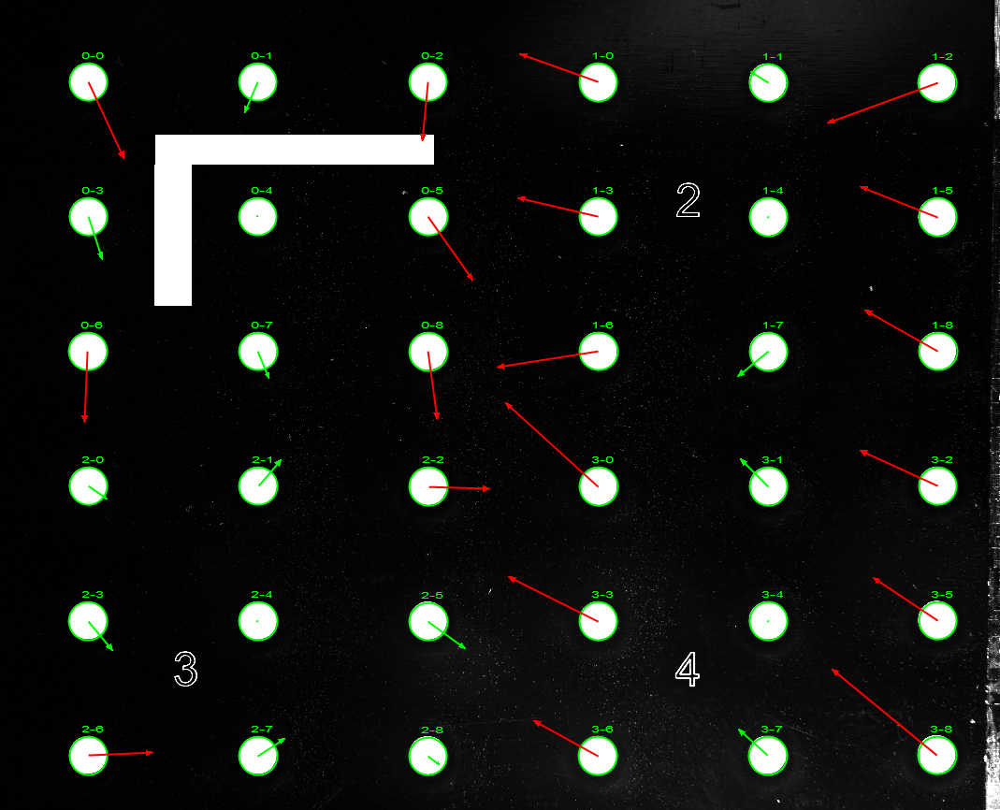
Ví dụ dưới đây minh họa cách tính sai số cho vùng đơn; nguyên lý đa vùng tương tự. Sau khi tính hiệu chuẩn, có thể dùng kết quả để chuyển bất kỳ điểm nào trong ảnh sang tọa độ laser. Dựa trên nguyên lý hiệu chuẩn, tính toán này cần một tập tọa độ ảnh và tọa độ laser tương ứng. Chọn vòng ở giữa vùng làm chuẩn, tính toán tọa độ laser của các vòng còn lại và so với giá trị lý thuyết để xác định sai số tại vị trí đó.
Sai số này không phản ánh sai số thực trong quá trình tính toán (Lưu ý: trong thực tế, công cụ tính vị trí laser sẽ chọn Mark gần điểm thực tế nhất làm chuẩn, nên nếu dùng nhiều chuẩn thì tất cả sai số sẽ bằng 0). Việc dùng vòng trung tâm làm chuẩn chỉ nhằm cung cấp một khái niệm định lượng về sai số cho người dùng đối với cơ cấu và hệ thống thị giác hiện tại.
Như đã mô tả, độ dài vector sai số có thể điều chỉnh bằng nút “+” và “-”, nên không phản ánh độ lớn thực của sai số, chỉ biểu thị xu hướng. Xu hướng này phản ánh phần nào méo ảnh của camera, độ thẳng đứng khi lắp camera, và độ chính xác định vị Mark. Khi sai số tổng thể lớn, cần kiểm tra độ chính xác định vị Mark; nếu chính xác, quan sát hướng và tính nhất quán của xu hướng. Ví dụ Hình 10, xu hướng sai số cho thấy camera bị méo nhiều (sai số trái sang phải, phải sang trái, trên xuống dưới, dưới lên trên); nếu sai số trái-phải đồng nhất, có thể camera không thẳng đứng đủ độ chính xác.
Như GIF minh họa, khi người dùng thay đổi vùng tìm kiếm, công cụ sẽ tự động định vị các Mark hình tròn trong vùng và đặt GUI tìm vòng vào vị trí tương ứng. Logic tự động như sau:
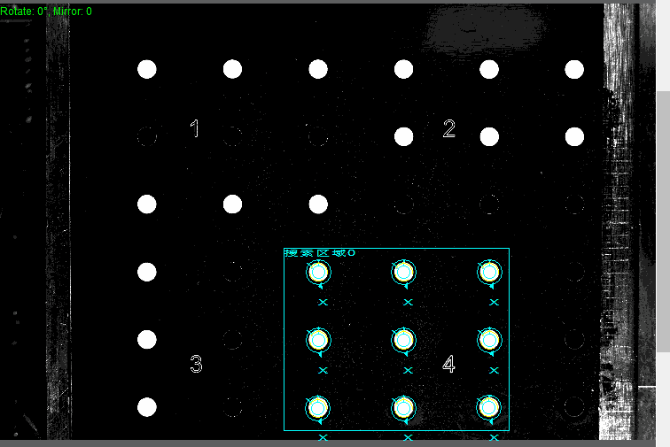
Khi laser in đặc trưng L, hướng X là cạnh dài, hướng Y là cạnh ngắn, tỉ lệ X/Y là 2:1, chiều rộng d ≥ 60 Pixel. Vị trí in nên gần góc đầu tiên, như hình minh họa dưới đây.
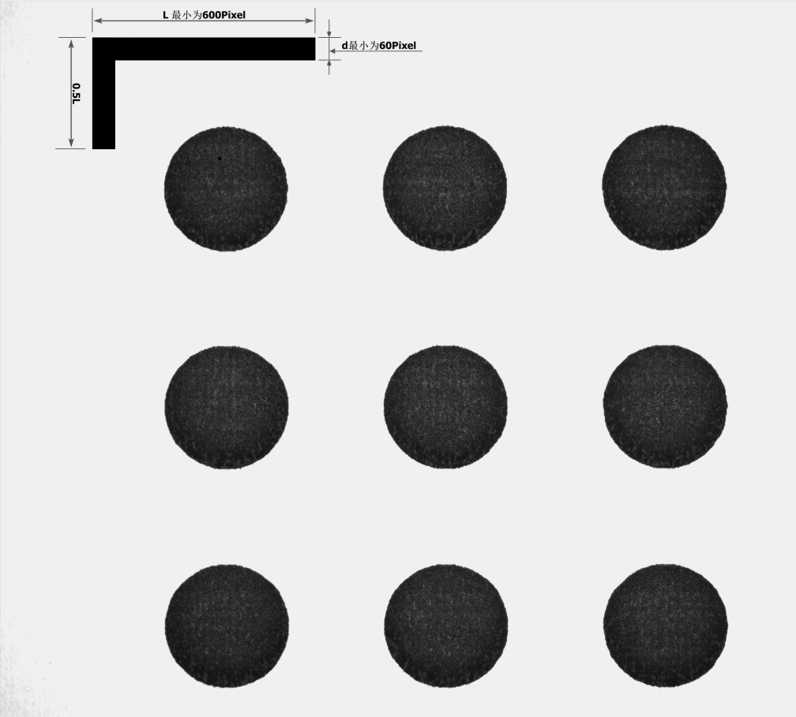
Khi trích xuất đặc trưng L, do chất lượng ảnh hoặc tỉ lệ đặc trưng, có thể trích xuất tự động thất bại. Lúc này, người dùng có thể chọn “Trích xuất thủ công”, hai công cụ tìm đường sẽ xuất hiện trên giao diện. Người dùng kéo chúng vào vị trí chính xác, rồi nhấn lại nút “Trích xuất đặc trưng L”.
Khi người dùng chọn điền thủ công tọa độ laser, có thể do khoảng cách giữa các điểm laser hoặc điểm xuất phát không đúng. Lúc này cần xác nhận lại các giá trị tọa độ laser.
| Tên tham số | Giải thích |
|---|---|
| Ảnh đầu vào | Liên kết đến ảnh xám cần hiệu chuẩn |
| Tên tham số | Giải thích |
|---|---|
| Ảnh đầu vào | Chiều rộng, chiều cao và kích thước điểm ảnh của ảnh đầu ra. |
| Kết quả hiệu chuẩn | Quan hệ chuyển đổi giữa hệ tọa độ ảnh và hệ tọa độ laser của từng khu vực. |
| Lỗi RMS | Đánh giá sai số kết quả hiệu chuẩn của từng khu vực. |
| Kết quả thực thi | Kết quả thực thi của công cụ. |
| Thời gian thực thi | Thời gian công cụ thực thi. |
参见“\Samples\激光关联标定+激光位置计算工具.gvp”。